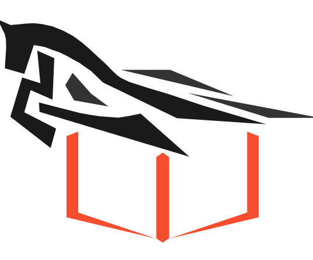
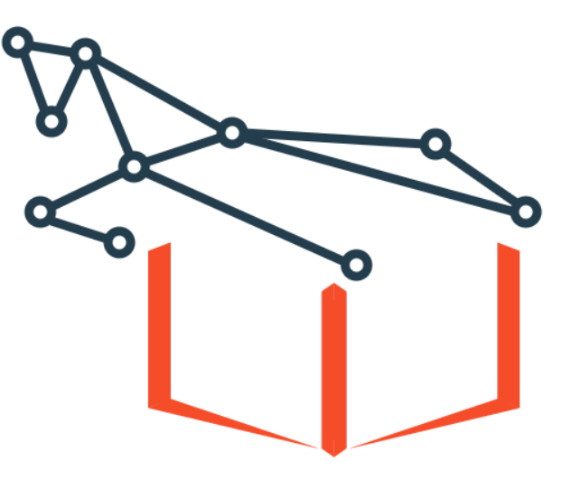

|
Publications [Google
Scholar]
|
-
Temporal Contrastive Pre-Training for Sequential Recommendation.
Changxin Tian, Zihan Lin, Shuqing Bian, Jinpeng Wang, Wayne Xin Zhao.
CIKM 2022.
|
-
Multimodal Meta-Learning for Cold-Start Sequential Recommendation.
Xingyu Pan, Yushuo Chen, Changxin Tian, Zihan Lin, Jinpeng Wang, He Hu, Wayne Xin
Zhao.
CIKM 2022, Applied Research Track.
|
-
RecBole 2.0: Towards a More Up-to-Date Recommendation Library.
Wayne Xin Zhao, Yupeng Hou, Xingyu Pan, Chen Yang, Zeyu Zhang, Zihan Lin, Jingsen Zhang, Shuqing
Bian,
Jiakai Tang, Yushuo Chen, Lanling Xu, Gaowei Zhang, Zhen Tian, Changxin
Tian,
Shanlei Mu, Xinyan Fan, Xu Chen and Ji-Rong Wen.
CIKM 2022, Resource Track. Best Resource Paper
Runner-up.
|
-
Learning to Denoise Unreliable Interactions for Graph Collaborative Filtering.
Changxin Tian, Yuexiang Xie, Yaliang Li, Nan Yang, Wayne Xin Zhao.
SIGIR 2022.
|
-
Improving Graph Collaborative Filtering with Neighborhood-enriched Contrastive
Learning.
Zihan Lin*, Changxin Tian*(equal contribution), Yupeng Hou*, Wayne Xin Zhao.
TheWebConf 2022.
|
-
RecBole: Towards a Unified, Comprehensive and Efficient Framework for Recommendation
Algorithms.
Wayne Xin Zhao, Shanlei Mu*, Yupeng Hou*, Zihan Lin, Yushuo Chen, Xingyu Pan,
Kaiyuan Li,
Yujie Lu, Hui Wang, Changxin Tian, Yingqian Min, Zhichao Feng, Xinyan Fan, Xu
Chen, Pengfei Wang,
Wendi Ji, Yaliang Li, Xiaoling Wang and Ji-Rong Wen
CIKM 2021, Resource Track.
|
-
Data Poisoning Attack against Recommender System Using Incomplete and Perturbed Data.
Learning.
Hengtong Zhang*, Changxin Tian*(equal contribution), Yaliang Li, Lu Su, Jing Gao,
Nan Yang, Wayne Xin
Zhao.
KDD 2021.
|
|

|


Core Developer | RecBole is a unified, comprehensive and efficient framework for reproducing and
developing
recommendation algorithms.
[HomePage]
[GitHub]
[Paper]
|
|

|


Core Developer | RecBole-GNN is a library built upon PyTorch and RecBole for reproducing and
developing recommendation algorithms based on graph neural networks (GNNs).
[GitHub]
[Paper]
|
|
Experience
|
-
Research Engineer Intern, ByteDance.
06/2022 - 09/2022. Data - E-commerce.
-
Research Intern, Meituan.
02/2022 - 06/2022. Recommendation Technology Center.
|
|
Education
|
-
M.E., Renmin University of China.
2020 - 2023(Expected), School of Information
Advisor: Prof. Wayne Xin Zhao.
-
B.E., Beijing University of Posts and Telecommunications.
2016 - 2020, School of Computer Science.
|
|